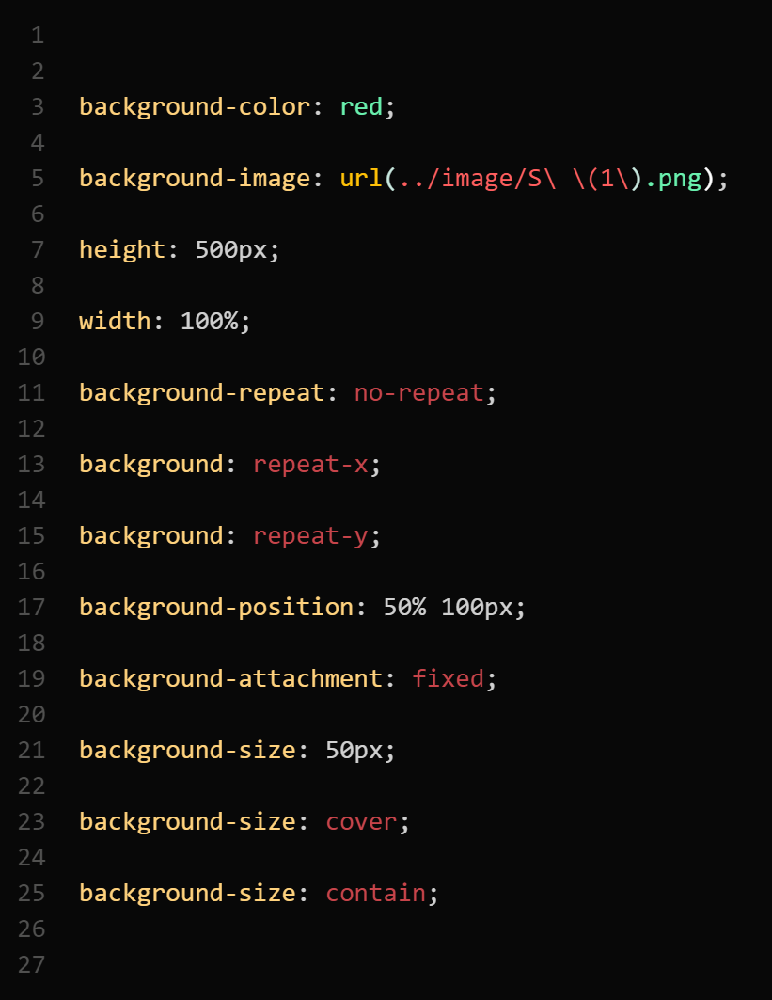
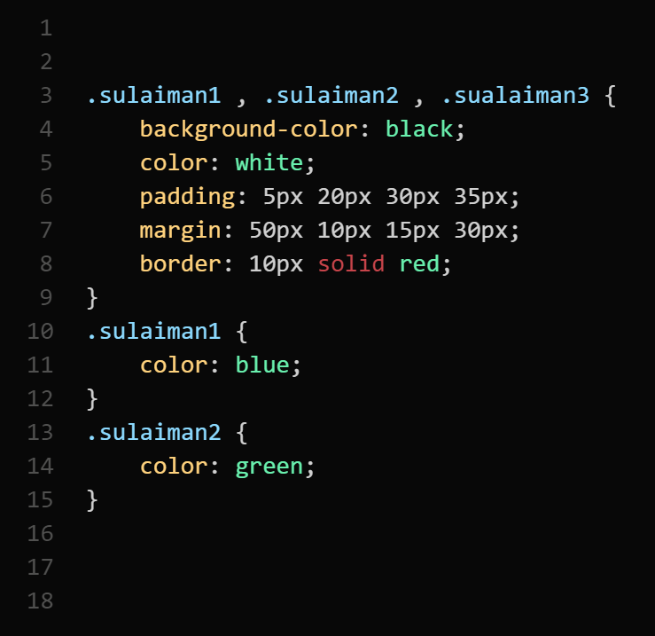
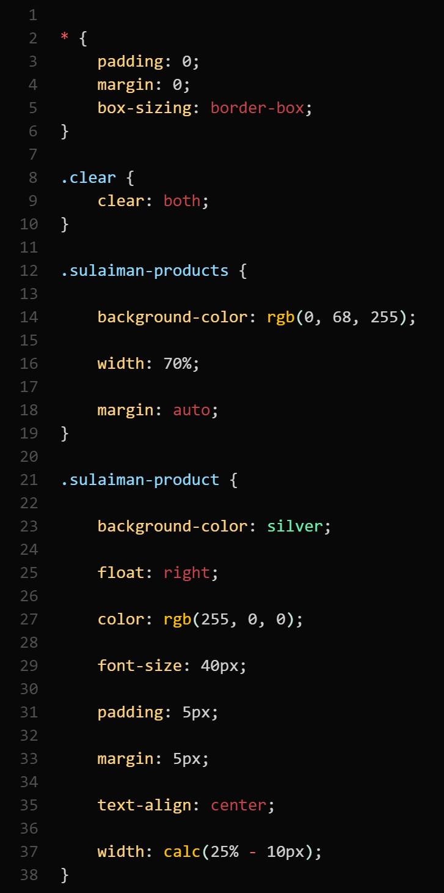
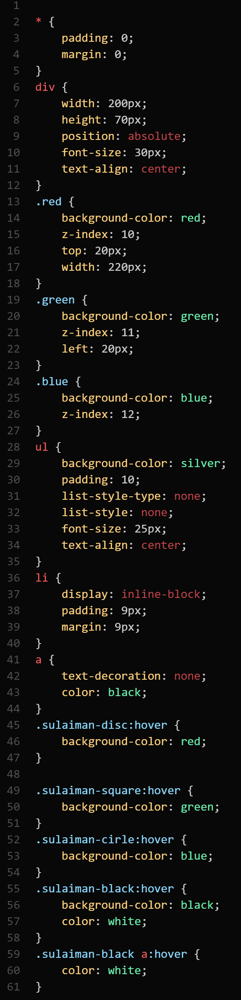
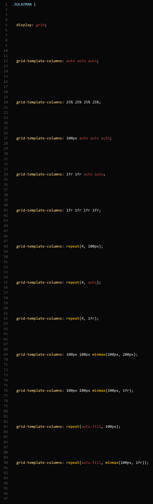

| شرح الكود | صورة الكود |
|---|---|
|
background-color :
يستخدم هذا الكود لتحديد لون خلفية العنصر
background-image : يستخدم هذا الكود لتحديد صورة كخلفية للعنصر باستخدام رابط URL ( /.. ) في CSS يستخدم للتنقل إلى المجلد الأعلى في هيكل المجلدات height : يستخدم لتحديد ارتفاع العنصر. يمكن استخدام وحدات مثل البيكسل (px) النسب المئوية (%) إلخ. background-repeat no-repeat : يمنع تكرار الصورة الخلفية repeat-x : يكرر الصورة الخلفية أفقياً repeat-y : يكرر الصورة الخلفية عمودياً background-position : يستخدم لتحديد موقع الصورة الخلفية. يمكن تحديده بالأرقام (البكسل) أو الكلمات المفتاحية (مثل top, bottom, left, right, center ). بالأرقام: background-position: 50px 100px بالكلمات المفتاحية: background-position: top right background-attachment fixed : يجعل الصورة الخلفية ثابتة بحيث لا تتحرك مع تحرك الصفحة background-size : يستخدم لتحديد حجم الصورة الخلفية cover : يجعل الصورة الخلفية تغطي كامل العنصر بدون تشويه contain : يجعل الصورة الخلفية تتناسب داخل العنصر بدون تشويه |
 |
|
padding :
في CSS لا يقبل القيم السالبة إذا حاولت استخدام قيمة سالبة للـ padding سيتم تجاهل القيمة وسيتم اعتبارها كأنها لم تُعطى الهدف الرئيسي من padding هو إضافة مساحة حول محتوى العنصر من الداخل وهذا لا يمكن تحقيقه باستخدام قيم سالبة إذا كنت ترغب في تقليل مساحة حول محتوى العنصر من الخارج، يمكنك استخدام margin بقيمة سالبة لكنها تُستخدم بحذر لأنها قد تؤدي إلى تداخل العناصر Padding : هي إحدى الخصائص المستخدمة لتحديد المسافة الداخلية بين محتوى العنصر وحدوده بمعنى آخر، padding تحدد المسافة بين النص أو الصورة أو أي محتوى آخر موجود داخل العنصر وحدود العنصر نفسه يمكن تحديد قيمة padding من جميع الجوانب (الأعلى، الأسفل، اليسار، اليمين) بنفس القيمة أو يمكن تحديد قيمة مختلفة لكل جانب على حدة |
|
|
هنا، سيتم إضافة مسافة
20 بيكسل من جميع الجوانب (الأعلى، الأسفل، اليسار، اليمين) بين النص وحدود المربع |
|
|
إذا كنت تريد تحديد
ثلاث قيم فقط
في
padding
في هذا المثال، يتم تخصيص القيمة الأولى (20px) للـ padding من الأعلى والقيمة الثانية (15px) للـ padding من اليمين و اليسار والقيمة الثالثة (10px) للـ padding من الأسفل |
|
|
لتحديد
padding :
لجهة واحدة فقط،
يمكنك استخدام الخصائص الفردية للـ padding يمكنك استبدال padding-top بـ padding-right لجهة اليمين، padding-bottom لجهة الأسفل، أو padding-left لجهة اليسار حسب الحاجة |
|
|
لتحديد
padding لجهتين فقط يمكنك استخدام الخصائص الفردية للجوانب التي ترغب بتحديدها |
|
|
للتحكم في ال
pading بطريقة مختصرة |
|
|
Margin
هو الخاصية التي تحدد المسافة بين عنصر معين والعناصر الأخرى حوله margin: 10px هذا يعني أن جميع جوانب العنصر (العلوي، الأيمن، السفلي، والأيسر) سيكون لها مسافة 10 بكسل من العناصر الأخرى حوله يمكن للـ margin أن يأخذ قيمة سالبة. الفائدة من ذلك هي تقليل المسافة بين العناصر أو جعلها تتداخل margin-top: -10px يجعل العنصر أقرب بمقدار 10 بكسل من العنصر الذي فوقه margin-right: 30% هذا يعني أن المسافة على الجانب الأيمن من العنصر ستكون 30% من عرض العنصر الحاوي margin-left: 30% نفس الشيء لكن على الجانب الأيسر margin-right: auto و margin-left: auto هذه الخاصية تُستخدم غالبًا لمركزة العنصر أفقيًا داخل العنصر الحاوي عندما تكون قيمة الهامش الأيمن والأيسر "auto"، يتم توزيع المساحة الفارغة بالتساوي على كلا الجانبين margin: auto يطبق خاصية "auto" على جميع الجوانب الأربعة (الأعلى، الأسفل، اليمين، واليسار) غالبًا ما يُستخدم لمركزة العناصر أفقيًا وعموديًا داخل العنصر الحاوي |
|
|
لإنشاء حدود للعنصر يمكنك استخدام الخصائص التالية :
border-width border-color border-style border-width : تستخدم لتحديد عرض الحدود border-width: 10px : يعني أن عرض الحدود سيكون 10 بكسل border-color : تستخدم لتحديد لون الحدود border-color: green; مع عدة ألوان يمكن استخدام هذه الخاصية لتحديد ألوان مختلفة لكل جانب من الحدود border-color: green blue red black هذا يعني: اللون الأخضر للحد العلوي اللون الأزرق للحد الأيمن اللون الأحمر للحد السفلي اللون الأسود للحد الأيسر border-style : تستخدم لتحديد نمط الحدود border-style: solid : سيجعل الحدود بخط صلب. هناك أنماط أخرى مثل dashed dotted إلخ border-top : تستخدم لتحديد نمط، عرض، ولون الحد العلوي فقط border-top: solid 10px blue سيجعل الحد العلوي صلبًا بعرض 10 بكسل border-top-color : تستخدم لتحديد لون الحد العلوي فقط border-top-color: blue; |
|
|
border-radius: 40px :
يعطي جميع زوايا العنصر انحناء بزاوية
40 بكسل
border-radius: 40px 20px : يحدد انحناء مختلف للزوايا بحيث تكون الزوايا العلوية اليمنى والسفلية اليسرى بزاوية 40 بكسل والزوايا العلوية اليسرى والسفلية اليمنى بزاوية 20 بكسل border-radius: 40px 20px 60px : يحدد انحناء لكل زاوية من الزوايا الأربعة بطريقة مختلفة الزوايا بالترتيب: العلوية اليمنى 40 بكسل العلوية اليسرى 20 بكسل السفلية اليمنى 60 بكسل والسفلية اليسرى غير محددة فتكون 0 بكسل border-top-left-radius: 50px : يعطي الزاوية العلوية اليسرى فقط انحناء بزاوية 50 بكسل border-bottom-left-radius: 50px يعطي الزاوية السفلية اليسرى فقط انحناء بزاوية 50 بكسل border-top-left-radius: 50px 20px يعطي الزاوية العلوية اليسرى انحناء أفقي بزاوية 50 بكسل وانحناء رأسي بزاوية 20 بكسل border-top-right-radius: 50px 20px يعطي الزاوية العلوية اليمنى انحناء أفقي بزاوية 50 بكسل وانحناء رأسي بزاوية 20 بكسل border-bottom-right-radius: 50px 20px يعطي الزاوية السفلية اليمنى انحناء أفقي بزاوية 50 بكسل وانحناء رأسي بزاوية 20 بكسل border-bottom-left-radius: 50px 20px يعطي الزاوية السفلية اليسرى انحناء أفقي بزاوية 50 بكسل وانحناء رأسي بزاوية 20 بكسل |
|
|
cursor: pointer :
تقوم هذه الخاصية بتغيير شكل
المؤشر
إلى شكل
اليد
عندما يكون
فوق
العنصر
مما
يشير
إلى أن العنصر قابل
للنقر
عليه
display: block : هذه الخاصية تجعل العنصر يتم عرضه كعنصر block خصائص عناصر ال block تشغل العرض الكامل للمحتوى المتاح تبدأ في سطر جديد يمكن تطبيق width و height و margin و padding عليها display: inline : هذه الخاصية تجعل العنصر يتم عرضه كعنصر سطر خصائص عناصر السطر: لا تبدأ في سطر جديد؛ تكون بجانب العناصر الأخرى تشغل فقط العرض المطلوب لمحتواها لا يمكن تطبيق width و height عليها padding و margin يمكن تطبيقها، لكن margin من الأعلى والأسفل قد لا يكون له تأثير الفرق بين عناصر block و inline من ناحية الـ padding و margin عناصر block يمكن تطبيق padding و margin من جميع الجهات (الأعلى، اليمين، الأسفل، اليسار) عناصر inline يمكن تطبيق padding و margin من جميع الجهات لكن margin من الأعلى والأسفل قد لا يؤثر display: inline-block تجمع هذه الخاصية بين خصائص inline و block يتم عرض العنصر كعنصر سطر مما يعني أنه يمكن أن يكون بجانب عناصر أخرى يمكن تطبيق width و height على العنصر padding و margin يمكن تطبيقها بشكل كامل display: none تقوم هذه الخاصية بإخفاء العنصر بالكامل من الصفحة لا يتم عرض العنصر ولا يشغل أي مساحة visibility: hidden تقوم هذه الخاصية بإخفاء العنصر، لكنه ما زال يشغل المساحة المعتادة في الصفحة. الفرق الرئيسي بينها وبين display: none هو أن العنصر لا يزال موجودًا لكن غير مرئي |
|
|
عند كتابة قواعد
CSS
لمجموعة من العناصر وتريد إعطاءها خصائص مشتركة يمكنك استخدام الكلاسات الكلاسات تُعرَّف في CSS باستخدام النقطة (.) متبوعة باسم الكلاس إذا كنت ترغب في دمج عدة كلاسات وإعطاءها نفس الخصائص، يمكنك فصلها بالفاصلة (,) مثلاً، إذا كان لديك عدة عناصر تريد إعطاءها نفس الخصائص يمكنك كتابة الكود كما يلي: بهذه الطريقة ستُطبَّق الخصائص الموجودة في الكلاس على العناصر التي تحتوي على أي من الكلاسات المذكورة [ sulaiman1 sulaiman2 sulaiman3 ] |
 |
|
للوصول إلى عنصر معين في
HTML
باستخدام
CSS
يمكنك استخدام التسلسل الهرمي للعنصر من الأب إلى الهدف هذا يعني أنك تحدد أولاً العنصر الأب ثم تتبعه بالتسلسل إلى العنصر الهدف الذي تريد تطبيق الأنماط عليه يمكنك الوصول إلى العنصر الهدف بكتابة التسلسل الهرمي له في CSS |
|
|
خاصية
overflow
في
CSS
تُستخدم للتحكم في كيفية عرض المحتوى الذي يتجاوز حجم العنصر
overflow: hidden : تخفي أي محتوى يتجاوز حدود العنصر لا يمكن للمستخدم التمرير لرؤية المحتوى المخفي overflow: scroll تضيف شريط تمرير دائمًا حتى إذا كان المحتوى لا يتجاوز حدود العنصر يمكن للمستخدم التمرير داخل العنصر overflow: auto تضيف شريط تمرير فقط إذا كان المحتوى يتجاوز حدود العنصر إذا لم يكن هناك محتوى زائد، فلن يتم عرض شريط التمرير يمكن استخدام overflow-x و overflow-y للتحكم في التمرير بشكل مستقل على المحور الأفقي (x) أو الرأسي (y) overflow-x: hidden تخفي أي محتوى يتجاوز حدود العنصر على المحور الأفقي (الجانبي) overflow-y: hidden تخفي أي محتوى يتجاوز حدود العنصر على المحور الرأسي ملخص overflow: hidden يخفي المحتوى الزائد overflow: scroll يُظهر شريط تمرير دائمًا overflow: auto يُظهر شريط تمرير عند الحاجة overflow-x: hidden يخفي المحتوى الزائد أفقيًا overflow-y: hidden يخفي المحتوى الزائد رأسيًا |
|
|
text-shadow: 2px 7px 9px red :
هذا الكود يضيف
تأثير
الظل للنص
2px: الإزاحة الأفقية للظل. النص يتحرك 2 بكسل إلى اليمين 7px: الإزاحة العمودية للظل. النص يتحرك 7 بكسل إلى الأسفل 9px: نصف قطر الضبابية للظل. يكون الظل أكثر ضبابية بزيادة هذه القيمة red: اللون الذي سيتم استخدامه للظل يمكن استخدام قيم سالبة في خاصية text-shadow عند استخدام قيمة سالبة في الإزاحة الأفقية أو العمودية يمكن أن يتحرك الظل باتجاه مختلف text-align: center : محاذاة النص في الوسط text-align: right : محاذاة النص إلى اليمين text-align: left : محاذاة النص إلى اليسار direction: rtl : تحديد اتجاه النص من اليمين إلى اليسار vertical-align: top : محاذاة العنصر عموديًا إلى الأعلى vertical-align: middle : محاذاة العنصر عموديًا في الوسط text-decoration: underline : إضافة خط تحت النص text-decoration: overline : إضافة خط فوق النص text-decoration: line-through : إضافة خط خلال النص (مثل الشطب) text-decoration: none : إزالة أي تزيين للنص اخفاء الخط مثل الخط الموجود في تاغ ال [a] text-transform: capitalize : تحويل الحرف الأول من كل كلمة في النص إلى حرف كبير text-transform: uppercase : تحويل جميع حروف النص إلى حروف كبيرة text-transform: lowercase : تحويل جميع حروف النص إلى حروف صغيرة letter-spacing: 2px : تحديد المسافة بين الحروف بـ 2 بكسل text-indent: 20px : تحديد مقدار المسافة البادئة للسطر الأول من النص بـ 20 بكسل line-height: 120% : تحديد ارتفاع السطر كنسبة مئوية (120%) line-height: 2 : تحديد ارتفاع السطر كقيمة نسبية (ضعفي ارتفاع السطر الأساسي) |
|
|
px (pixels):
الوحدة
px
تمثل بكسل واحد على الشاشة
هي وحدة ثابتة تعني أنها لا تعتمد على حجم الخطوط أو أي شيء آخر في التصميم استخدام px يجعل الأحجام ثابتة ودقيقة em: الوحدة em وحدة نسبية تستند إلى حجم الخط للأب المباشر للعنصر على سبيل المثال إذا كان حجم الخط للعنصر الأب هو 16px فإن 1em للعنصر الفرعي يكون 16px إذا كانت قيمة em هي 2 فإن حجم العنصر الفرعي سيكون 32px rem: الوحدة rem وحدة نسبية تستند إلى حجم الخط للجذر html فإذا كان حجم الخط للجذر هو 16px فإن 1rem تساوي 16px |
|
|
font-family:
تحدد العائلة الخطية للنص
font-weight: 700: تحدد سماكة الخط و 700 تعني خط عريض القيم تتراوح من 100 (رقيق جدا) إلى 900 (عريض جدا) div font-size: 20px: تحدد حجم النص داخل العنصر div بـ 20 بكسل font-size: 25px: تحدد حجم النص بـ 25 بكسل font-size: 1em: تحدد حجم النص باستخدام وحدة em font-size: 4rem: تحدد حجم النص باستخدام وحدة rem تعني أربعة أضعاف حجم الخط الجذري font-variant: small-caps: تعرض النص بطريقة الأحرف الكبيرة الصغيرة (Small Capitals) حيث تُظهر الأحرف الصغيرة بأحرف كبيرة مصغرة |
|
|
float: left:
يعني أن العنصر الذي يتم تطبيق
هذه الخاصية
عليه سيتم وضعه على
الجانب الأيسر
من العنصر الذي
يحتويه
مع السماح للعناصر الأخرى بالإحاطة به على الجانب الأيمن float: right: يعني أن العنصر سيتم وضعه على الجانب الأيمن من العنصر الذي يحتويه مع السماح للعناصر الأخرى بالإحاطة به على الجانب الأيسر clear: both: تستخدم هذه الخاصية لإيقاف التأثيرات المترتبة على استخدام خاصية float [ * ] padding: 0: تعني أن قيمة الحشوة (padding) لجميع العناصر ستكون صفرًا مما يزيل أي مساحة داخلية داخل الحدود margin: 0: تعني أن قيمة الهوامش (margin) لجميع العناصر ستكون صفرًا مما يزيل أي مساحة خارجية حول العناصر box-sizing: border-box: تغير الطريقة التي يتم بها حساب العرض والارتفاع مع هذه الخاصية يتم تضمين قيمة الحشوة (padding) والحدود (border) داخل العرض والارتفاع المحددين width: calc(25% - 10px): تستخدم دالة calc لحساب العرض كنسبة مئوية من حجم العنصر الحاوي مع طرح 10 بكسل هذا يعني أن العرض سيكون 25% من حجم العنصر الحاوي ناقص 10 بكسل كيفية حساب عرض العنصر عند استخدام خاصية box-sizing: content-box وهي القيمة الافتراضية لـ box-sizing في هذه الحالة يتم حساب عرض العنصر دون تضمين الحشوة (padding) أو الحدود (border) أي أنه يتم إضافة الحشوة والحدود إلى العرض المحدد للعنصر مثلا، إذا كان العرض المحدد للعنصر هو 100 بكسل وكانت الحشوة 10 بكسل لكل جانب فالعرض الإجمالي للعنصر سيكون 120 بكسل (100 بكسل + 10 بكسل على اليسار + 10 بكسل على اليمين) |
 |
|
position: relative :
هذا يعني أن العنصر سيكون موضعه
بالنسبة لمكانه الطبيعي
في التدفق العادي للصفحة عند استخدام هذه الخاصية يمكن تحريك العنصر بالنسبة لموقعه الأصلي باستخدام الخواص top, right, bottom, left إذا كان لديك عنصر أب div مع خاصية position: relative وعنصر ابن div مع خاصية position: absolute فإن العنصر الابن سيتم وضعه نسبةً إلى العنصر الأب هذا يعني أن أي قيم تقوم بتحديدها للخواص top, right, bottom, left للعنصر الابن سيتم حسابها نسبةً لموضع العنصر الأب position: fixed : هذا يعني أن العنصر سيكون ثابتًا بالنسبة لنافذة العرض بغض النظر عن التمرير العنصر لا يتحرك عند تمرير الصفحة على سبيل المثال يمكن استخدام هذه الخاصية لإنشاء شريط تنقل ثابت في الجزء العلوي من الصفحة position: sticky هذا مزيج من relative و fixed العنصر سيكون موضعه النسبي حتى يصل إلى حد معين في التمرير وعندها سيصبح موضعه ثابتًا ملخص relative: بالنسبة لموقعه الطبيعي absolute: بالنسبة لأقرب عنصر رئيسي مع خاصية position fixed: بالنسبة لنافذة العرض، ثابت بغض النظر عن التمرير sticky: يبدأ نسبيًا يصبح ثابتًا عند حد معين |
|
|
z-index :
خاصية تُستخدم للتحكم في ترتيب العناصر
كلما زادت قيمة
z-index
كان العنصر أمام العناصر الأخرى إليك مثلاً ما تعنيه هذه القيم z-index: 10 : يعني أن العنصر في مرتبة معينة z-index: 11 : يعني أن العنصر في مرتبة أعلى z-index: 12 : يعني أن العنصر في مرتبة أعلى من جميع ما سبق list-style-type : هذه الخاصية تتحكم في نوع العلامات التي تُستخدم في عناصر القوائم disc: تعني استخدام نقاط مليئة (●) square: تعني استخدام مربعات مليئة (■) circle: تعني استخدام دوائر فارغة (○) none: تعني عدم استخدام أي علامة list-style-position : تُستخدم لتحديد مكان عرض علامات القوائم بالنسبة للنصوص inside: تُعرض العلامة داخل النص outside: تُعرض العلامة خارج النص list-style تجمع بين list-style-type و list-style-position في خاصية واحدة: list-style: none يعني عدم استخدام أي علامة وعدم تحديد مكان معين hover : هو حدث يتم تفعيله عندما يمر المستخدم بمؤشر الفأرة فوق عنصر معين يمكن استخدامه لتطبيق تأثيرات معينة عند التمرير على العناصر |
 |
|
border-spacing: 1px :
هذا الكود يستخدم لتحديد المسافة بين حدود الخلايا داخل جدول
(table)
في هذه الحالة المسافة بين الحدود ستكون 1 بكسل tr:nth-child(even) { background-color: red; } . هذا الكود يطبق اللون المحدد كخلفية على كل صف زوجي داخل الجدول يعني ذلك الصفوف 2، 4، 6 وهكذا tr:nth-child(odd) : { background-color: red; } هذا الكود يطبق اللون المحدد كخلفية على كل صف فردي داخل الجدول يعني ذلك الصفوف 1، 3، 5 وهكذا box-shadow: 2px 3px 4px 5px red inset 2px: إزاحة الظل أفقيًا (لليمين) 3px: إزاحة الظل عموديًا (لأسفل) 4px: مقدار التمويه للظل 5px: انتشار الظل red: لون الظل inset: تحديد أن الظل داخلي أي أنه يظهر داخل حدود العنصر معلومة إضافية: يمكنه أيضًا قبول القيم السالبة وفي هذه الحالة يحدث العكس تمامًا إذا كانت الإزاحة الأفقية سالبة يتحرك الظل لليسار إذا كانت الإزاحة العمودية سالبة يتحرك الظل لأعلى خاصية [ opacity ] تستخدم لتحديد مدى شفافية العنصر (أو مدى وضوحه) القيم التي يمكن استخدامها مع هذه الخاصية تتراوح من 0 إلى 1 0: يجعل العنصر شفافًا تمامًا (غير مرئي) 1: يجعل العنصر غير شفاف على الإطلاق (واضح تمامًا) opacity: 0.2 : يجعل العنصر شفافًا بنسبة 80% أي أنه يظهر بنسبة 20% فقط |
|
|
a:link { color: green; }
تغير
لون
الروابط
غير المزارة
إلى اللون الأخضر
a:visited { color: red; } تغير لون الروابط المزارة سابقًا إلى اللون الأحمر a:hover { color: black; } تغير لون الروابط عندما يمر الماوس فوقها إلى اللون الأسود a:active { color: blue; } تغير لون الروابط أثناء الضغط عليها إلى اللون الأزرق :checked +label { color: green; font-size: 30px; } يستهدف العنصر label التالي مباشرةً بعد عنصر تم تحديده (مثل checkbox) ويغير لونه إلى الأخضر وحجم الخط إلى 30px :checked +label { display: none; } يخفي العنصر label التالي مباشرةً بعد عنصر تم تحديده (مثل checkbox) input:focus { background-color: red; } يغير لون خلفية حقول الإدخال input إلى اللون الأحمر عندما تكون في وضع التركيز (focus) :required { background-color: red; } يغير لون خلفية الحقول المطلوبة (required fields) إلى اللون الأحمر input:read-only { background-color: blue; } يغير لون خلفية حقول الإدخال التي تكون في وضع القراءة فقط (read-only) إلى اللون الأزرق p::first-letter { background-color: green; font-size: 22px; padding: 2px; } يستهدف الحرف الأول من الفقرة ويغير لون خلفيته إلى الأخضر، وحجم الخط إلى 22px ويضيف مسافة padding بقيمة 2px p::first-line { background-color: green; font-size: 22px; padding: 2px; } يستهدف السطر الأول من الفقرة ويغير لون خلفيته إلى الأخضر، وحجم الخط إلى 22px ويضيف مسافة padding بقيمة 2px ::selection { background-color: red; color: blue; } يغير لون الخلفية إلى الأحمر ولون النص إلى الأزرق عند تحديد النص (مثل عند استخدام الماوس لتحديد النص) ::marker { color: red; } هذا الكود يستخدم لتغيير لون العلامة (النقاط أو الأرقام) في القوائم إلى اللون الأحمر |
|
|
root:
هذا هو عنصر الجذر في
CSS
ويستخدم لتعريف المتغيرات التي يمكن
استخدامها في جميع أنحاء الملف
--maincolor: blue; تعريف متغير باسم --maincolor وقيمته اللون الأزرق --secondarycolor: red; تعريف متغير باسم --secondarycolor وقيمته اللون الأحمر --mainpaddin: 20px; تعريف متغير باسم --mainpaddin وقيمته 20 بكسل يمكنك تسمية المتغيرات داخل :root بأي أسماء تريدها الفكرة من تعريف المتغيرات هي جعل الكود أكثر قابلية للإدارة وإعادة الاستخدام يمكنك استخدام هذه المتغيرات في أي مكان في الكود بإمكانك تسمية المتغيرات بأي أسماء ترغب فيها طالما أنها تتبع القواعد العامة للتسمية في CSS (لا تحتوي على مسافات وتبدأ بشرطتين --) بهذه الطريقة يمكنك تنظيم وتعديل القيم بسهولة عبر المشروع بأكمله |
|
|
overflow: hidden
يستخدم للتحكم في كيفية عرض المحتوى الذي يتجاوز حجم العنصر المحدد
في هذه الحالة
يتم إخفاء
أي
محتوى يتجاوز الحدود
box-sizing: border-box يستخدم لتغيير طريقة حساب عرض وارتفاع العنصر بحيث يشمل الحشوة والحدود |
|
|
الأكواد المتعلقة بالانتقالات
الانتقالات في
CSS
تستخدم لجعل التغييرات في الخصائص
تحصل بسلاسة بدلاً من التغيير الفوري
transition-duration: 2s transition-duration: 2000ms تحدد مدة الانتقال يمكن تحديدها بالثواني (2s) أو بالمللي ثانية (2000ms) القيمتين تعني نفس المدة (2 ثواني) transition-delay: 3s transition-delay: 3000ms تحدد الوقت الذي يجب انتظاره قبل بدء الانتقال. مثل المدة يمكن تحديدها بالثواني أو المللي ثانية transition-property: transition-property: border-radius; تحدد الخاصية التي ستتم عليها الانتقال بشكل محدد في هذه الحالة الخاصية هي border-radius transition-timing-function: تحدد وظيفة التوقيت للانتقال. هذه القيم تحدد كيفية توزيع السرعة عبر مدة الانتقال transition-timing-function: ease يبدأ ببطء، يتسارع، ثم يتباطأ transition-timing-function: ease-in يبدأ ببطء transition-timing-function: ease-out يتباطأ عند النهاية transition-timing-function: ease-in-out يبدأ ببطء ويتباطأ عند النهاية transition-timing-function: linear انتقال ثابت بدون تسارع أو تباطؤ green transition: all 2s تحدد الانتقال لجميع الخصائص وتستمر لمدة 2 ثانية هذه الطريقة تشبه الجمع بين جميع خصائص الانتقال الفردية في سطر واحد !importan يستخدم لإعطاء أولوية عالية للقيمة المحددة بحيث تتجاوز أي قواعد أخرى قد تتعارض معها |

|
|
display: flex :
تُستخدم لجعل الأب يستخدم نظام
Flexbox
لعرض وتنظيم العناصر الفرعية بداخله
flex-direction يحدد الاتجاه الذي يتم فيه وضع العناصر الفرعية داخل الأب flex-direction: row : يتم وضع العناصر الفرعية في صف أفقي من اليسار إلى اليمين flex-direction: row-reverse يتم وضع العناصر الفرعية في صف أفقي من اليمين إلى اليسار flex-direction: column : يتم وضع العناصر الفرعية في عمود رأسي من الأعلى إلى الأسفل flex-direction: column-reverse يتم وضع العناصر الفرعية في عمود رأسي من الأسفل إلى الأعلى |
|
|
flex-wrap
تحدد ما إذا كانت العناصر الفرعية في الأب يمكن أن تنتقل إلى
صفوف جديدة أم لا
flex-wrap: nowrap شرح: تخيل أن جميع العناصر الفرعية داخل الأب مثل الأبناء في صف واحد في الفصل الدراسي هذا الخيار يجبر جميع الأبناء على البقاء في نفس الصف مهما كانت المساحة ضيقة ولا يسمح لهم بالانتقال إلى صفوف أخرى إذا كانت المساحة غير كافية فإن العناصر تتكدس بجانب بعضها البعض flex-wrap: wrap شرح: الآن تخيل أن الأبناء يمكنهم الانتقال إلى صف جديد عند ملء الصف الأول هذا الخيار يسمح للعناصر الفرعية بالانتقال إلى صفوف جديدة إذا لم تكن هناك مساحة كافية في الصف الأول مثال: عندما تريد أن تكون العناصر مرنة وتنتقل إلى صفوف جديدة عند الحاجة flex-wrap: wrap-reverse شرح: نفس فكرة الخيار السابق ولكن بالعكس هنا تبدأ العناصر بالانتقال إلى صفوف جديدة من الأسفل إلى الأعلى بدلاً من الأعلى إلى الأسفل مثال: يستخدم عندما تريد تغيير ترتيب الصفوف بحيث تظهر من الأسفل إلى الأعلى |
|
|
justify-content
يحدد كيفية
توزيع
العناصر الفرعية على المحور الرئيسي
justify-content: flex-start يتم وضع العناصر في بداية الأب justify-content: flex-end يتم وضع العناصر في نهاية الأب justify-content: center يتم وضع العناصر في وسط الأب justify-content: space-between يتم توزيع العناصر بالتساوي مع ترك مسافة بين كل عنصرين justify-content: space-around يتم توزيع العناصر بالتساوي مع ترك مسافة متساوية حول كل عنصر justify-content: space-evenly يتم توزيع العناصر بحيث تكون المسافات متساوية بين جميع العناصر وبين الحدود أيضًا align-items : يحدد كيفية توزيع العناصر الفرعية على المحور المتعامد align-items: stretch : يتم تمديد العناصر لتتناسب مع ارتفاع الأب align-items: flex-start : يتم وضع العناصر عند بداية المحور المتعامد align-items: flex-end : يتم وضع العناصر عند نهاية المحور المتعامد align-items: center : يتم وضع العناصر في وسط المحور المتعامد |
|
|
نستخدم خاصية
flex-grow
لتحديد كيفية
توزيع مساحة الفراغ
بين عناصر الأبناء في الأب
بعبارة أخرى
هذه الخاصية تحدد مدى نمو الأبناء عندما يكون هناك مساحة متبقية في الأب flex-grow: 1; : يعني أن الابن سيأخذ حصة واحدة من المساحة الفارغة في الأب إذا كان هناك أكثر من ابن في نفس الأب، وكلهم لديهم flex-grow: 1; فسيتم توزيع المساحة الفارغة بالتساوي بينهم flex-grow: 2; : يعني أن الابن سيأخذ حصتين من المساحة الفارغة في الأب إذا كان هناك ابن آخر في نفس الأب مع flex-grow: 1 فإن الابن الذي لديه flex-grow: 2 سيأخذ ضعف المساحة الفارغة التي يأخذها الابن الآخر |
|
|
flex-shrink :
لتحديد كيفية تصغير حجم الأبناء
flex-shrink: 1; : يعني أن الابن يمكنه التصغير بحصة واحدة من حجمه الأصلي سيتم تصغير حجم الابن بنسبة معينة بناءً على هذا القيمة flex-shrink: 0; : يعني أن الابن لن يتقلص أبدًا بغض النظر عن نقص المساحة الابن سيظل بحجمه الأصلي دائمًا flex-shrink: 2; : يعني أن الابن يمكنه التصغير بحصتين من حجمه الأصلي فسيتم تصغير حجم الابن بنسبة أكبر من flex-shrink: 1;. flex-shrink: 3; : هذا الكود يعني أن الابن يمكنه التصغير بثلاث حصص من حجمه الأصلي فسيتم تصغير حجم الابن بنسبة أكبر من flex-shrink: 2; |
|
|
order :
تستخدم لتحديد
ترتيب الأبناء
داخل الأب عند استخدام
Flexbox
بعبارة أخرى
هذه الخاصية تحدد الترتيب الذي سيظهر به الأبناء داخل الأب بغض النظر عن الترتيب الفعلي في كود html order: 0 : هذا الكود يعني أن الابن سيظهر في الترتيب الافتراضي إذا لم يتم تحديد خاصية order لأي ابن آخر سيتم ترتيب جميع الأبناء حسب ترتيبهم الأصلي في كود html order: 1 : يعني أن الابن سيظهر بعد الأبناء الذين لديهم order: 0 order: 2 : يعني أن الابن سيظهر بعد الأبناء الذين لديهم order: 1 order: 3 : يعني أن الابن سيظهر بعد الأبناء الذين لديهم order: 2 order: 4 : يعني أن الابن سيظهر بعد الأبناء الذين لديهم order: 3 order: 5 : يعني أن الابن سيظهر بعد الأبناء الذين لديهم order: 4 عند تكرار العنصر مع نفس قيمة order ستظهر جميع الأبناء المتكررة بنفس القيمة بترتيبها الفعلي في كود html |
|
|
align-items: end :
تحدد هذه الخاصية كيفية
محاذاة جميع الأبناء
داخل الأب على المحور العمودي
(الرأسي)
نحو
النهاية
الاستخدام: نستخدمها لضبط مواضع جميع الأبناء في الأب بشكل موحد
نحو نهاية الأب
align-self: start : تحدد هذه الخاصية كيفية محاذاة الابن الفردي داخل الأب نحو البداية الاستخدام: نستخدمها لضبط موضع ابن معين في الأب نحو البداية بغض النظر عن إعدادات الأب align-self: center : تحدد هذه الخاصية كيفية محاذاة الابن الفردي داخل الأب نحو المركز الاستخدام: نستخدمها لضبط موضع ابن معين في الأب نحو المركز، بغض النظر عن إعدادات الأب align-self: end : تحدد هذه الخاصية كيفية محاذاة الابن الفردي داخل الأب نحو النهاية الاستخدام: نستخدمها لضبط موضع ابن معين في الأب نحو النهاية بغض النظر عن إعدادات الأب align-self: flex-end تعمل هذه الخاصية بنفس الطريقة التي تعمل بها align-self: end حيث تحدد كيفية محاذاة الابن الفردي داخل الأب نحو النهاية الاستخدام: نستخدمها لضبط موضع ابن معين في الأب نحو النهاية وتعتبر مماثلة لـ align-self: end align-self: flex-start تعمل هذه الخاصية بنفس الطريقة التي تعمل بها align-self: start حيث تحدد كيفية محاذاة الابن الفردي داخل الأب نحو البداية الاستخدام: نستخدمها لضبط موضع ابن معين في الأب نحو البداية وتعتبر مماثلة لـ align-self: start |
|
|
flex-direction :
تحدد الاتجاه الذي سيتم ترتيب الأبناء فيه داخل الأب عند استخدام
Flexbox
يمكن أن تكون القيم المتاحة لهذه الخاصية هي:
row (الافتراضي) : ترتيب الأبناء أفقياً row-reverse: ترتيب الأبناء أفقياً بالعكس column: ترتيب الأبناء عمودياً column-reverse: ترتيب الأبناء عمودياً بالعكس flex-direction: column يعني أن الأبناء سيتم ترتيبهم عمودياً داخل الأب الاستخدام: نستخدم هذا الكود عندما نريد ترتيب الأبناء بشكل عمودي بدلاً من الترتيب الأفقي الافتراضي flex-basis: 300px : يعني أن الحجم الأساسي للابن سيكون 300 بكسل نستخدم هذا الكود لتحديد حجم مبدئي معين للابن كيفية تصرف flex-basis عند استخدام column في الأب عندما نستخدم flex-direction: column : في الأب فإن الاتجاه الرئيسي يصبح عمودياً وبالتالي، فإن خاصية flex-basis ستؤثر على ارتفاع الأبناء بدلاً من عرضهم |
|
|
auto:
يعتمد على
محتوى الأبناء
1fr: يعتمد على المساحة المتبقية minmax(): يوفر مرونة مع حدود repeat(): يسهل إنشاء أعمدة / صفوف متكررة gap: يضبط المسافات بين الأعمدة والصفوف |
توضيح بسيط في البداية |
|
display: grid
هذا الكود هو الأساس لتحويل العنصر إلى
نظام شبكة
بمجرد استخدام هذا الكود، يصبح العنصر
الأب قادرًا على تنظيم عناصره الداخلية
(الأبناء)
بشكل شبكي
يمكن تخيل الأب هنا كلوحة كبيرة مقسمة إلى صفوف وأعمدة، حيث يتم ترتيب الأبناء داخل هذه الأقسام
grid-template-columns: auto auto auto هنا يتم تقسيم الأب إلى 3 أعمدة ذات عرض تلقائي (auto) كل عمود سيأخذ العرض الذي يحتاجه بناءً على محتوى الابن الموجود فيه مثال: إذا كان لديك 3 أبناء بعرض مختلف، فسيتم ضبط عرض كل عمود بناءً على أكبر ابن في ذلك العمود grid-template-columns: 25% 25% 25% 25% هنا يتم تقسيم الأب إلى 4 أعمدة متساوية وكل عمود يأخذ 25% من عرض الأب الفرق عن السابق: في الحالة السابقة (auto) العرض يعتمد على المحتوى بينما هنا العرض ثابت بالنسبة المئوية grid-template-columns: 100px auto auto auto العمود الأول ثابت بعرض 100px والباقي يتم تحديده تلقائيًا (auto) بناءً على محتوى الأبناء -الاستخدام: عندما تريد أن يكون العمود الأول دائمًا بحجم ثابت بينما الأعمدة الأخرى مرنة grid-template-columns: 1fr 1fr auto auto هنا يتم تقسيم الأب إلى 4 أعمدة: العمودان الأول والثاني يأخذان نفس النسبة من المساحة المتبقية (1fr) العمودان الثالث والرابع يأخذان العرض التلقائي (auto) الفرق عن 25%: 1fr يعني جزءًا متساويًا من المساحة المتبقية بعد احتساب الأعمدة ذات العرض الثابت grid-template-columns: 1fr 1fr 1fr 1fr هنا يتم تقسيم الأب إلى 4 أعمدة متساوية تمامًا وكل عمود يأخذ نفس النسبة من المساحة المتبقية الفرق عن 25%: 1fr : يعتمد على المساحة المتبقية بعد احتساب الهوامش والعناصر الأخرى بينما 25% : يعتمد على عرض الأب الإجمالي grid-template-columns: repeat(4, 100px) هنا يتم إنشاء 4 أعمدة، كل منها بعرض 100px الفرق عن الكتابة المباشرة: استخدام repeat يجعل الكود أكثر اختصارًا وتنظيمًا grid-template-columns: repeat(4, auto) يتم إنشاء 4 أعمدة، كل منها بعرض تلقائي (auto) grid-template-columns: repeat(4, 1fr) يتم إنشاء 4 أعمدة متساوية وكل عمود يأخذ نفس النسبة من المساحة المتبقية grid-template-columns: 100px 100px minmax(100px, 200px) العمودان الأول والثاني بعرض ثابت 100px العمود الثالث يتراوح عرضه بين 100px و200px حسب المساحة المتاحة الاستخدام: عندما تريد أن يكون العمود الثالث مرنًا ولكن ضمن حدود معينة grid-template-columns: 100px 100px minmax(100px, 1fr) العمودان الأول والثاني بعرض ثابت 100px العمود الثالث يأخذ الحد الأدنى 100px، ولكنه يمكن أن يتوسع ليملأ المساحة المتبقية (1fr) grid-template-columns: repeat(auto-fill, 100px) يقوم بإنشاء أكبر عدد ممكن من الأعمدة بعرض 100px، مع ملء المساحة المتاحة إذا لم يكن هناك مساحة كافية لعمود جديد، فإنه لن يظهر grid-template-columns: repeat(auto-fill, minmax(100px, 1fr)); يقوم بإنشاء أكبر عدد ممكن من الأعمدة بعرض لا يقل عن 100px ولا يزيد عن المساحة المتبقية (1fr) الاستخدام: هذا الخيار مرن للغاية ويتكيف مع حجم الشاشة |
 |
|
grid-template-rows: 200px 150px 100px
يتم تقسيم الأب إلى 3 صفوف
بأطوال ثابتة :
الصف الأول 200px، الثاني 150px، والثالث 100px
grid-template-rows: 50% 150px 100px الصف الأول يأخذ 50% من ارتفاع الأب والصفان الآخران بارتفاع ثابت grid-template-rows: repeat(3, 200px) يتم إنشاء 3 صفوف كل منها بارتفاع 200px grid-template-rows: auto auto auto يتم إنشاء 3 صفوف وكل صف يأخذ الارتفاع التلقائي بناءً على محتوى الأبناء grid-template-rows: 1fr auto auto الصف الأول يأخذ نسبة من المساحة المتبقية (1fr) والصفان الآخران يأخذان الارتفاع التلقائي |
|
|
gap: 10px :
يحدد المسافة
بين الأعمدة والصفوف
في هذه الحالة المسافة بين كل عمود وصف هي
10px
gap: 10px 20px : المسافة بين الأعمدة 20px والمسافة بين الصفوف 10px |
|
|
justify-content: start
يتم وضع الأعمدة في
بداية الأب
أفقيًا
justify-content: space-between يتم توزيع الأعمدة بالتساوي بحيث تكون المسافات بينها متساوية مع عدم وجود مسافة قبل العمود الأول أو بعد العمود الأخير align-content: start يتم وضع الصفوف في بداية الأب عموديًا align-content: space-between يتم توزيع الصفوف بالتساوي بحيث تكون المسافات بينها متساوية مع عدم وجود مسافة قبل الصف الأول أو بعد الصف الأخير |
|
|
left">translateX(50px):
ينقل
العنصر 50 بكسل إلى
اليمين
translateX(-50px): ينقل العنصر 50 بكسل إلى اليسار translateY(50px): ينقل العنصر 50 بكسل إلى الأسفل translateY(-50px): ينقل العنصر 50 بكسل إلى الأعلى translate(-50%, -50%): ينقل العنصر الفرعي إلى مركز العنصر الأب |
|
|
الدوران
css
rotate(30deg):
يدور
العنصر 30 درجة في اتجاه
عقارب الساعة
rotate(-30deg): يدور العنصر 30 درجة في اتجاه عكس عقارب الساعة rotate(1turn): يدور العنصر دورة كاملة (360 درجة) rotate(1turn) translateX(50px): يجمع بين الدوران والنقل حيث يدور العنصر دورة كاملة وينتقل 50 بكسل إلى اليمين |
|
|
التحجيم
scaleX(1.5):
يكبر
العنصر
أفقيًا
بمقدار 1.5 مرة
scaleX(-1): يعكس العنصر أفقيًا (سيكون انعكاس أفقي على المحور Y) scale(1.5, 2): يكبر العنصر أفقيًا بمقدار 1.5 مرة وعموديًا بمقدار مرتين scale(0.8, 0.6): يصغر العنصر أفقيًا بمقدار 0.8 مرة وعموديًا بمقدار 0.6 مرة scale(1, 2) rotate(30deg) translateX(-30px): يكبر العنصر عموديًا بمقدار مرتين يدوره 30 درجة وينقله 30 بكسل إلى اليسار |
|
|
الانحراف
skewX(45deg):
ينحرف
العنصر
أفقيًا
بمقدار 45 درجة في اتجاه
اليمين
skewX(-45deg): ينحرف العنصر أفقيًا بمقدار -45 درجة في اتجاه اليسار skew(45deg, 20deg): ينحرف العنصر أفقيًا بمقدار 45 درجة في اتجاه اليمين وعموديًا بمقدار 20 درجة في اتجاه الأسفل |
|
|
matrix(1, 0, 0, 1, 50, -50):
ينقل العنصر 50 بكسل إلى اليمين و -50 بكسل إلى الأعلى
matrix(a, b, c, d, tx, ty)
a:
تمثل التحجيم الأفقي
(scaleX)
b: تمثل الإمالة العمودية (skewY) c: تمثل الإمالة الأفقية (skewX) d: تمثل التحجيم العمودي (scaleY) tx: تمثل النقل الأفقي (translateX) ty: تمثل النقل العمودي (translateY) |
|
|
مركز التحويل (Transform Origin)
transform-origin: left top ; :
يتم تعيين
مركز الحركة
إلى الزاوية العلوية اليسرى للعنصر
parent
عند تحريك الفأرة فوق العنصر
parent
سيظل الجزء العلوي الأيسر من العنصر في مكانه بينما يكبر باقي العنصر بمقدار 1.5 مرة أفقيًا
وعموديًا بعيدًا عن هذه النقطة
transform-origin: left bottom ; : يتم تعيين مركز الحركة إلى الزاوية السفلية اليسرى للعنصر parent عند تحريك الفأرة فوق العنصر parent سيظل الجزء السفلي الأيسر من العنصر في مكانه بينما يكبر باقي العنصر بمقدار 1.5 مرة أفقيًا وعموديًا بعيدًا عن هذه النقطة |
|
|
animation-name: change-width;:
يحدد
اسم
الحركة المعرّف في
@keyframes
الذي سيتم تطبيقه على العنصر في هذه الحالة الاسم هو
change-width
animation-duration: 5s; : يحدد مدة الحركة كاملة هنا الحركة ستستمر لمدة 5 ثوانٍ animation-iteration-count 3: يحدد عدد مرات تكرار الحركة في هذا المثال الحركة ستتكرر 3 مرات لاحظ أن السطر التالي يحتوي على infinite الذي يجعله يتكرر بشكل لا نهائي animation-timing-function: ease-in-out; : يحدد كيفية تغيير السرعة أثناء الحركة ease-in-out يعني أن الحركة ستبدأ ببطء تزداد سرعتها ثم تبطأ مرة أخرى في النهاية animation-direction: reverse : يحدد اتجاه الحركة هنا ستتحرك الحركة في الاتجاه المعاكس (العكس) |
|
|
animation-play-state: paused; :
عند مرور
مؤشر الفأرة فوق العنصر
ستتوقف الحركة
هذا يجعل الحركة تتوقف مؤقتًا حتى يتم رفع الفأرة تعريف الحركة في @keyframes 0% (البداية): العرض هو 100px لون الخلفية أحمر يتم تدوير العنصر بزاوية 0 درجة وينتقل إلى أعلى بمقدار 50px 50% (منتصف الحركة): العرض يصبح 200px يتم إرجاع العنصر إلى وضعه الأصلي (بدون انتقال) 100% (النهاية): العرض يعود إلى 100px لون الخلفية يصبح أزرق يتم تدوير العنصر بزاوية 360 درجة وينتقل إلى أعلى بمقدار 50px سبب الاستخدام التحريك والترتيب: لجعل العناصر تفاعلية وجذابة بصريًا التدرج في الحركة: استخدام توقيت ease-in-out يجعل الحركة تبدو طبيعية وأكثر سلاسة التفاعل مع المستخدم: إيقاف الحركة عند التمرير على العنصر يمنح المستخدم تحكمًا أكبر ويجعل التجربة التفاعلية أكثر ديناميكية |
|
|
*
يطبق هذا الكود الأنماط على جميع العناصر في الصفحة
box-sizing: border-box: يضمن أن الـpadding والـborder لا يؤثران على العرض والطول الإجمالي للعناصر أي أن الطول والعرض يظلان ثابتين مهما كانت قيمة الـpadding أو الـborder margin: 0; و padding: 0: إزالة المسافات الافتراضية حول العناصر للحصول على تصميم نظيف ومتناسق تصميم القسم sulaiman-prodacts يحدد هذا الكود الأنماط العامة للقسم الذي يحتوي على المنتجات background-color : ضبط لون خلفية القسم ليكون رماديًا padding: 10px : إضافة توسعة داخلية حول المحتوى لتجنب ملامسة المحتوى لحواف القسم display: flex : استخدام نظام العرض المرن (flex) لترتيب العناصر flex-wrap: wrap : يسمح للعناصر بالانتقال إلى السطر التالي عند عدم وجود مساحة كافية في السطر الحالي justify-content: space-between: توزيع العناصر بالتساوي مع وجود مسافات متساوية بينها تصميم عنصر فردي sulaiman-prodact يحدد الأنماط الأساسية للعنصر الفردي background-color: red : ضبط لون خلفية العنصر ليكون أحمرًا padding: 10px : إضافة توسعة داخلية حول المحتوى لتجنب ملامسة المحتوى لحواف العنصر margin: 5px : إضافة مسافة خارجية حول العنصر لتجنب التداخل مع العناصر المجاورة width: 100% : جعل العنصر يأخذ عرض القسم بالكامل text-align: center : توسيط النص داخل العنصر color: white : جعل لون النص أبيضًا ليكون مرئيًا بوضوح على الخلفية الحمراء الاستجابة لتغيير حجم الشاشة عبر الوسائط المتعددة (Media Queries): هذه الأوامر تضمن أن التصميم يتكيف مع أحجام الشاشات المختلفة عند عرض الشاشة يكون أكبر من 576 بكسل: background-color: green : تغيير لون الخلفية إلى الأخضر width: calc(50% - 30px) : جعل العرض 50% من عرض القسم مع طرح 30 بكسل لحساب الـpadding والـmargin عند عرض الشاشة يكون أكبر من 768 بكسل: background-color: rgb : تغيير لون الخلفية width: calc(33.3% - 30px) : جعل العرض 33.3% من عرض القسم مع طرح 30 بكسل border-radius: 30px : إضافة حواف مستديرة للعناصر لجعلها تبدو أفضل عند عرض الشاشة يكون أكبر من 992 بكسل: background-color: rgb: تغيير لون الخلفية إلى لون آخر width: calc(25% - 30px) : جعل العرض 25% من عرض القسم مع طرح 30 بكسل عند عرض الشاشة يكون أكبر من 1200 بكسل: background-color: rgb: تغيير لون الخلفية إلى أزرق فاتح width: calc(20% - 30px): جعل العرض 20% من عرض القسم، مع طرح 30 بكسل عند عرض الشاشة يكون أكبر من 1400 بكسل: background-color: green : تغيير لون الخلفية إلى الأخضر مرة أخرى width: calc(15% - 30px) : جعل العرض 15% من عرض القسم، مع طرح 30 بكسل خلاصة كل هذه الأكواد تضمن أن التصميم يكون متجاوبًا ويتكيف بشكل مناسب مع مختلف أحجام الشاشات مما يوفر تجربة بصرية ممتازة للمستخدمين عبر جميع الأجهزة |

|
|
أي عنصر يحمل الصنفين
first و`red`،
سيتحول لون نصه إلى الأحمر
يستخدم لتطبيق تنسيق معين على العناصر التي تحمل هذين الصنفين معًا
تخصيص عناصر معينة p.first : أي عنصر فقرة p يحمل الصنف first سيتحول لون نصه إلى الأحمر div.first : أي عنصر div يحمل الصنف first سيتحول لون نصه إلى الأحمر div , p , section : جميع عناصر div، p، و`section سيتحول لون نصها إلى الأحمر هذه الأكواد تستخدم لاستهداف أنواع معينة من العناصر بدلاً من جميع العناصر |
|
|
استهداف العناصر التابعة والمجاورة
div p :
كل عنصر فقرة
p
داخل عنصر
div
سيتحول لون نصه إلى الأحمر
div .test : كل عنصر يحمل الصنف test داخل عنصر div سيتحول لون نصه إلى الأحمر .containar > p : كل عنصر فقرة p يكون ابناً مباشراً لعنصر يحمل الصنف containar سيتحول لون نصه إلى الأحمر div ~ p : كل عنصر فقرة p يكون شقيقاً لعنصر div سيتحول لون نصه إلى الأحمر div + p : كل عنصر فقرة p يأتي بعد عنصر div مباشرةً سيتحول لون نصه إلى الأحمر هذه الأكواد تستخدم لاستهداف العناصر بناءً على علاقاتها الهيكلية مع عناصر أخرى |
|
|
استهداف الصفات
[type] :
كل عنصر يحتوي على الصفة
type
سيحصل على خلفية حمراء
[type="text"] : كل عنصر يحتوي على الصفة type وقيمتها text سيحصل على خلفية حمراء [type="submit"] : كل عنصر يحتوي على الصفة type وقيمتها submit سيحصل على خلفية حمراء هذه الأكواد تستهدف العناصر بناءً على قيم صفاتها |
|
|
استهداف الأنماط المختلفة للأصناف
class~='btn' :
يستهدف العناصر التي تحتوي على الصنف
btn
كجزء من قائمة الأصناف
class^='btn' : يستهدف العناصر التي تبدأ قيمة صنفها بـ btn class$='btn' : يستهدف العناصر التي تنتهي قيمة صنفها بـ btn class*='btn' : يستهدف العناصر التي تحتوي قيمة صنفها على btn في أي جزء منها تستخدم هذه الأكواد لاستهداف العناصر بناءً على أنماط محددة في أسماء الأصناف |
|
|
استهداف الحالات الخاصة
:empty :
العناصر
الفارغة
ستحصل على إطار أحمر
:lang(ar) : العناصر التي تحتوي على النص العربي ستحصل على إطار أحمر :disabled : العناصر المعطلة ستحصل على خلفية خضراء :checked + p : عنصر الفقرة p الذي يأتي بعد عنصر محدد سيحصل على خلفية خضراء input:focus : العناصر input في حالة التركيز ستحصل على خلفية حمراء input:hover : العناصر input في حالة التمرير بالفأرة فوقها ستحصل على خلفية حمراء هذه الأكواد تستهدف العناصر في حالات أو ظروف معينة |
|
|
استهداف الأطفال والأشقاء
li:first-child :
أول عنصر
li
سيحصل على لون نص أحمر
li:last-child : آخر عنصر li سيحصل على لون نص أحمر li:nth-child(4) : العنصر الرابع li سيحصل على لون نص أحمر li:nth-last-child(2) : العنصر الثاني li من النهاية سيحصل على لون نص أحمر li:nth-of-type(5) : العنصر الخامس li من نوعه سيحصل على لون نص أحمر li:nth-last-of-type(7) : العنصر السابع li من نوعه من النهاية سيحصل على لون نص أحمر li:nth-last-of-type(9) : العنصر التاسع li من نوعه من النهاية سيحصل على لون نص أحمر li:only-child : العنصر li الوحيد في الأب سيحصل على لون نص أحمر li:only-of-type : العنصر li الوحيد من نوعه في الأب سيحصل على لون نص أحمر هذه الأكواد تستهدف الأطفال والأشقاء في مواضع أو أنماط معينة |
|
|
أتمنى لكم جميعًا التوفيق والسعادة في كل خطوة تخطونها وأن يكلل الله مساعيكم
بالنجاح
لنملأ حياتنا بالتفاؤل والأمل ولنكن دائمًا مصدر نور وإيجابية لمن حولنا أتمنى أن تجد هذه الكلمات صدى في قلوبكم وتلهمكم لتحقيق الأفضل 🌟 اخوكم : SULAIMAN SHO | |